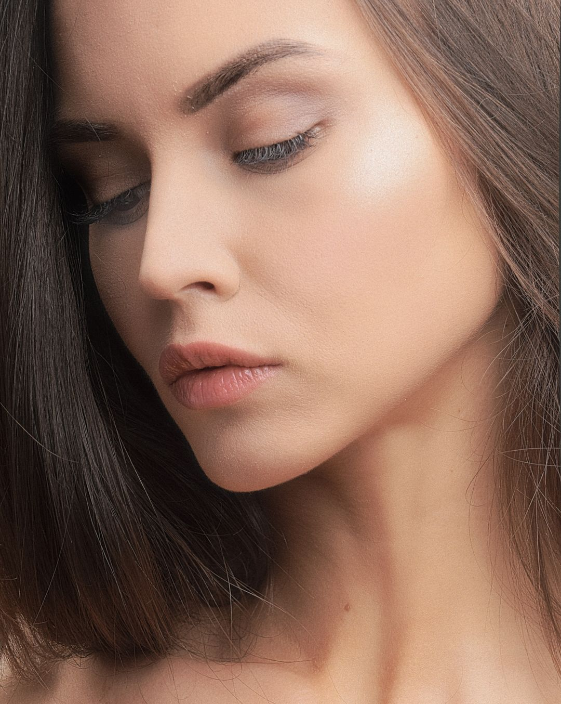
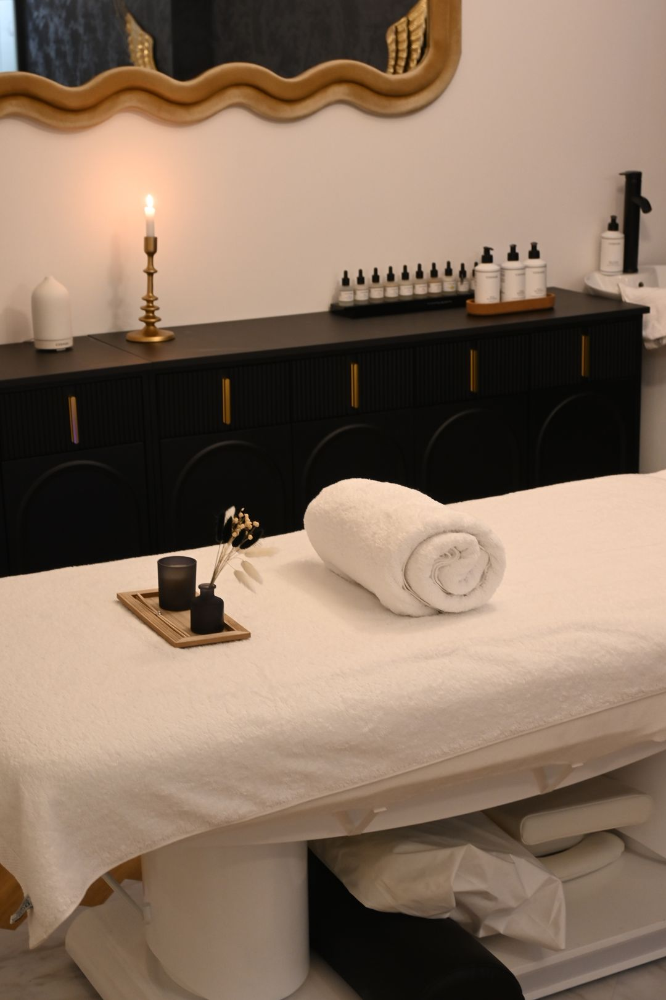

Micropigmentação
Técnica que proporciona definição e preenchimento das sobrancelhas, buscando um resultado harmônico e natural.
Consultar e agendar — Micropigmentação (abre o WhatsApp)Biomédica Esteta · Medianeira — PR
Beleza, precisão e naturalidade em cada detalhe. Cuidados personalizados para valorizar aquilo que você tem de mais único.


Cada rosto possui sua própria beleza. Meu trabalho é valorizar seus traços naturais através de procedimentos personalizados, atenção aos detalhes e cuidado em cada etapa do atendimento.
Camila May Missio Biomédica Esteta
Cada procedimento começa por ouvir você e entender o que deseja realçar.
Medidas, proporções e acabamento observados com calma, do início ao fim.
O objetivo é harmonizar os seus traços, nunca transformá-los em outros.
Higiene, avaliação individual e orientações claras em cada procedimento.
Agende seu atendimento e descubra como pequenos detalhes podem valorizar ainda mais sua beleza.
Agendar pelo WhatsApp